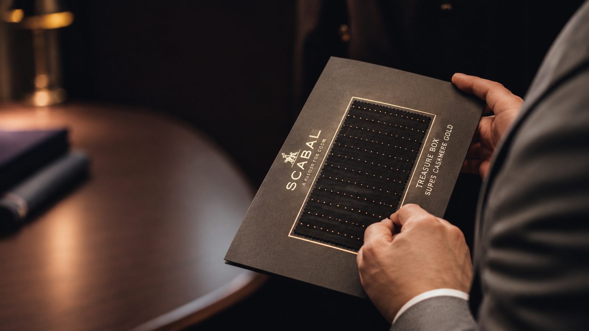
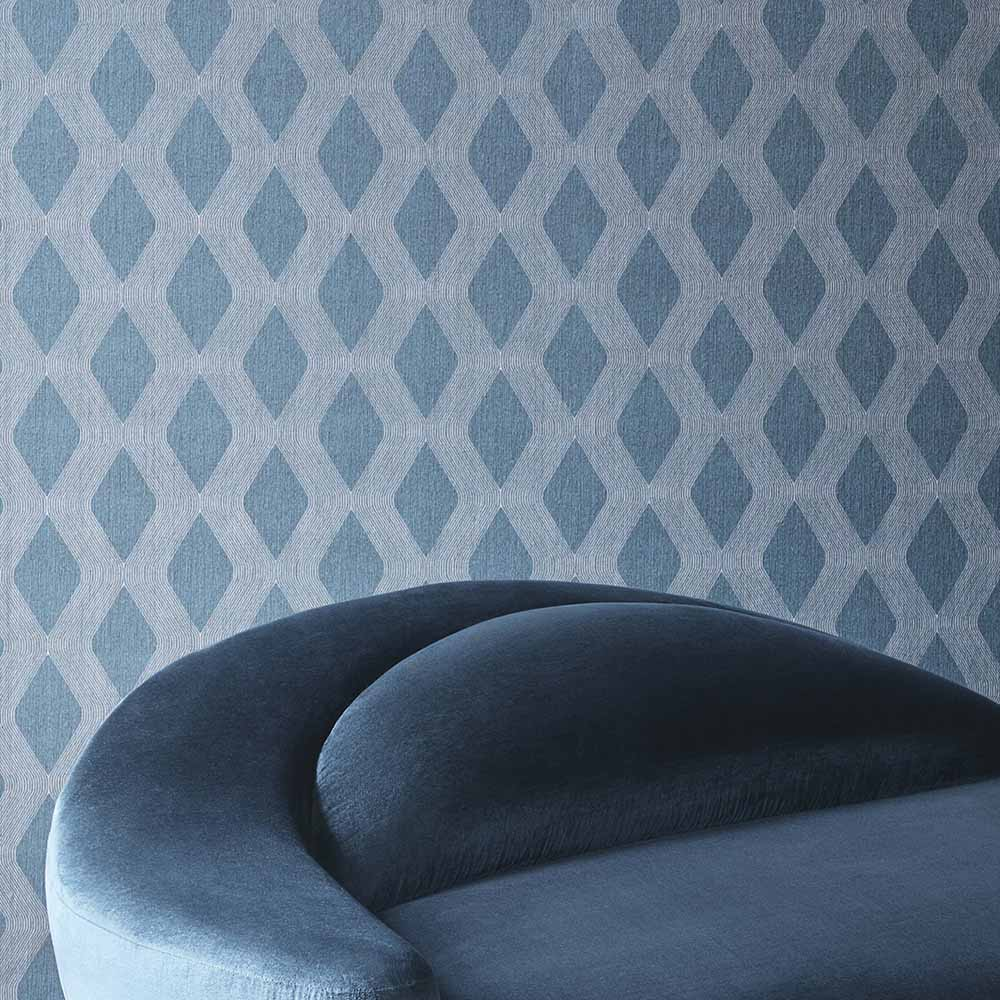

SIGNORI / FABRICS
The Art of Fabric
Every exceptional garment begins with the right cloth.
Our selection
A World of Exceptional Cloth
At SIGNORI, fabric is the starting point of every creation. Our selection brings together distinguished textile houses from Italy, England and beyond, offering a considered range of textures, weights and natural fibres for every individual expression of style.




Italian textile excellence
Loro Piana
Working with rare natural fibres in Piedmont since 1924, Loro Piana is renowned for its cashmere, vicuña and extra-fine merino. Softness, lightness and a close knowledge of the raw material shape every cloth.
Tradition & innovation
Ermenegildo Zegna
Founded as a wool mill in Trivero in 1910, Zegna has built its textile heritage around fine wool, technical expertise and continuous innovation. Its fabrics are known for elegant drape, precise finishing and a distinctly Italian approach to tailoring.


Brussels — Huddersfield
Scabal
Founded in Brussels in 1938, Scabal weaves at its own heritage mill in Huddersfield, England. The house is known for fine suiting cloths, deep textile knowledge and extensive collections that bring traditional craft together with new ideas.


Napoli — since 1920
Caccioppoli
Rooted in the tailoring culture of Naples, Caccioppoli is a historic cloth house that curates fabrics from Italian mills. Its collections bring together distinctive textures, elegant patterns and a natural sense of Neapolitan style.
Italian craft — modern character
Lanificio Rogna
Based in Italy’s Biella textile district, Lanificio Rogna takes its inspiration from historic British patterns. Its collections pair expressive design with wool, cashmere, silk and linen blends.


The wider selection
Beyond the Names
Beyond these distinguished houses, SIGNORI offers a broad selection of carefully chosen fabrics, each considered for its texture, character, composition and suitability for the garment it will become.


Selected with Purpose
The right fabric is more than a choice of colour or pattern. It determines how a garment feels, moves and becomes part of the person wearing it.